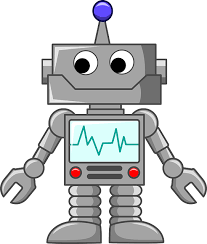

¿Como sera el proceso?
La automatización robótica de procesos es la tecnología que permite a cualquier persona configurar un software o también llamado “robot” para simular y desarrollar las acciones de un “humano” que interactúa dentro de sistemas digitales para ejecutar diferentes procesos de negocios.

como es la robotización:
- La robotización consiste básicamente en automatizar la ejecución de ciertas tareas o procesos con ayuda de robots, una tendencia que estamos viendo en la Industria 4.0, pero que hace tiempo que se lleva utilizando en los procesos de fabricación.
Tres características fundamentales:
- Grados de Libertad del robot.
- Zonas de trabajo y dimensiones del brazo o manipulador.
- Capacidad de carga.
inicio